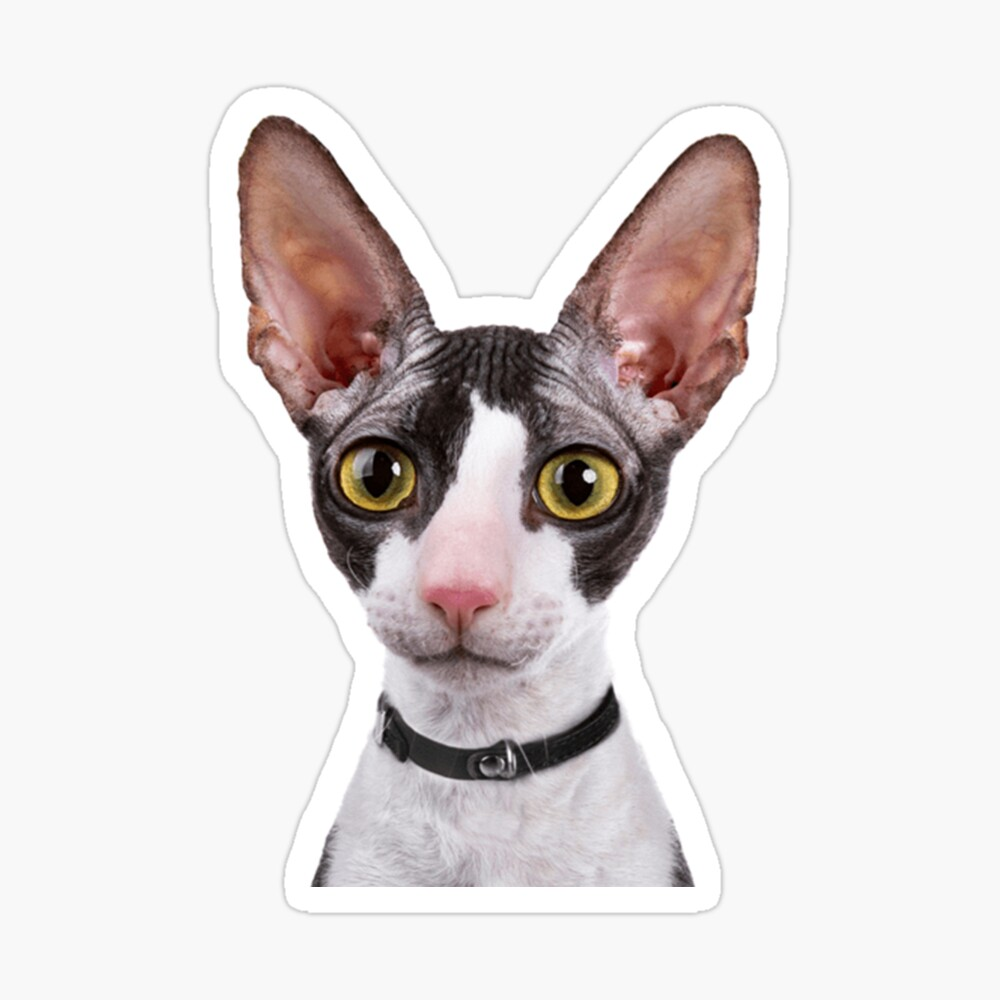

The Cornish Rex originated in Cornwall, England. This breed has an actual birthday: July 21st, 1950.

The Rex in Cornish Rex name in Latin language means “King”
Not only Cornish rex's fur is curly. The breed's whiskers and eyelashes are curly as well!
The typical Cornish rex lifespan is 15 years and they have virtually no hereditary or genetic health problems.
They are extremely affectionate cats and love to be around people — so much that they might demand attention and companionship.
Their high activity level and playfulness makes them work well with children and other pets.
These cats love to be content with a warm spot on your lap.